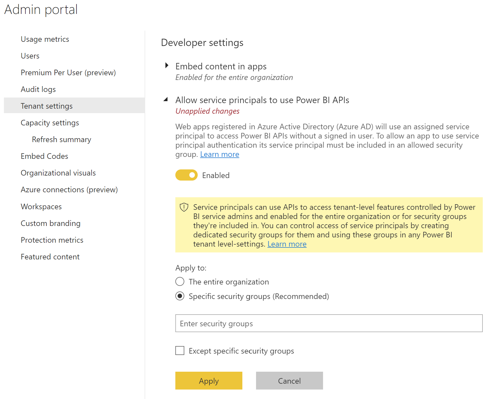
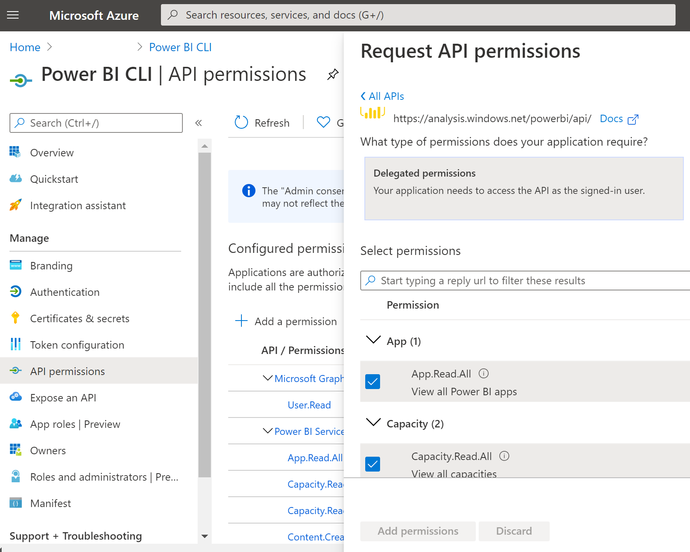

Setup a Service Principal
To use service principal with the Power BI CLI, follow these steps:
Step 1 - Create an Azure AD app
Create an Azure AD app using one of these methods and store the following information securely as it is needed:
- Azure app's Application ID
- Azure AD app's secret
- Azure app's Tenant ID
Creating an Azure AD app in the Microsoft Azure portal
See the create an Azure AD app article for the steps. You can skip the 'Role' and 'Policy' parts.
Creating an Azure AD app using a script
This section includes a sample script to create a new Azure AD app using the Azure CLI or PowerShell.
# Result contains the appId, password (secret) and tenant
# Sign in as a user that's allowed to create an app
az login
# Creates a new Azure AD web application and service principal
az ad sp create-for-rbac --name <ApplicationName>
Step 2 - Create an Azure AD security group
Your service principal doesn't have access to any of your Power BI content and APIs. To give the service principal access, create a security group in Azure AD, and add the service principal you created to that security group.
Creating an Azure AD security group in the Microsoft Azure portal
See the create a basic group and add members using Azure AD article for the steps.
Creating an Azure AD security group using a script
# Result contains the appId, password (secret) and tenant
# Sign in as a user that's allowed to create an app
az login
# Create an Azure AD security group
$group = az ad group create --display-name <GroupName> --mail-nickname notSet --query "{objectId:objectId}" --output tsv
# Retrieve correct object ID of the Setivce Principal
$member = az ad sp show --id <AppID> --query "{objectId:objectId}" --output tsv
# Add the service principal to the group
az ad group member add --group $group --member-id $member
Step 3 - Enable the Power BI service admin settings
For an Azure AD app to be able to access the Power BI content and APIs, a Power BI admin needs to enable service principal access in the Power BI admin portal.
- Navigate to to Power BI Admin Portal: https://app.powerbi.com/admin-portal/tenantSettings
- Scroll down to the
Developer settingssection - Expand the
Allow service principals to use Power BI APIssetting - Click on the
enabletoggle to enable the setting - Choose
Specific security groups (Recommended)in the 'Apply to' radio buttons - Add the security group created in step 2 in the textbox
- Click on
Applybutton to save the setting

Step 4 - Required API permissions
To access the Power BI APIs vai the Power BI CLI, the service principal need several scope assigned. In the table below is an overview of the required scopes.
| Command | Required scope |
|---|---|
| admin | Tenant.Read.All, Tenant.ReadWrite.All |
| app | App.Read.All |
| capacity | Capacity.Read.All, Capacity.ReadWrite.All |
| dashboard | Dashboard.Read.All, Dashboard.ReadWrite.All, Content.Create |
| dataflow | Dataflow.ReadWrite.All, Dataflow.Read.All |
| dataset | Dataset.ReadWrite.All, Dataset.Read.All |
| feature | None |
| gateway | Dataset.Read.All, Dataset.ReadWrite.All |
| import | Dataset.ReadWrite.All |
| report | Report.Read.All, Report.ReadWrite.All, Dataset.Read.All, Dataset.ReadWrite.All |
| workspace | Workspace.Read.All, Workspace.ReadWrite.All |
Adding the scopes as API permissions can be done via the Azure Portal on the management pane of the service principal.
Note
For the Tenant.Read.All and Tenant.ReadWrite.All scopes Admin consent is needed. This can be applied via the Azure portal.

Step 5 - Add the service principal to your workspace
To enable your Azure AD app access artifacts such as reports, dashboards and datasets in the Power BI service, add the service principal entity, or the security group that includes your service principal, as a member or admin to your workspace.
Alternative you can add the service principal as Power BI administrator via Roles and administrators part of your Azure Active Directory management.